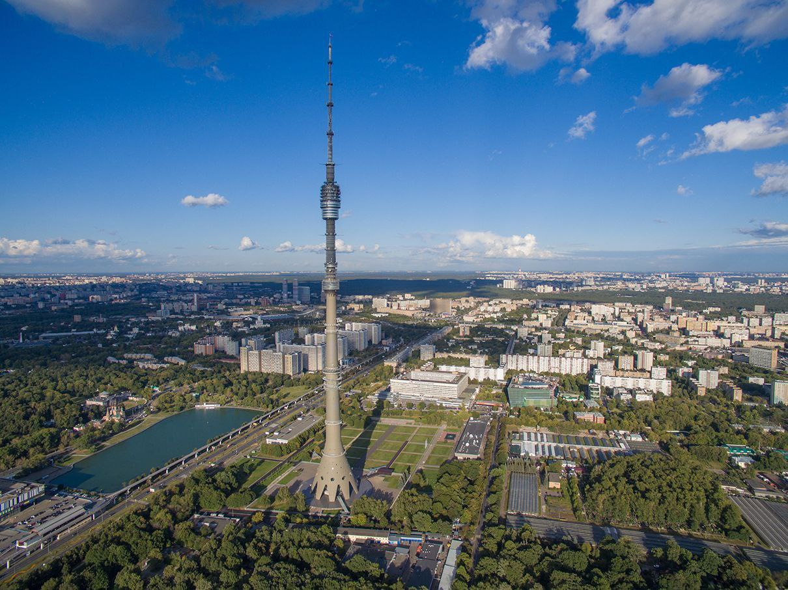
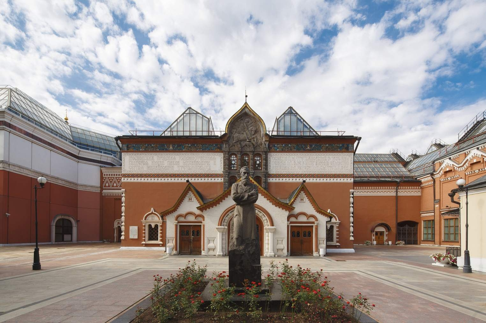

Популярные места

Останкинская телебашня
Знаковый символ Москвы и одна из самых высоких телебашен в мире — 540 метров. Отличное место для тех, кто хочет увидеть Москву с высоты птичьего полёта.

Третьяковская галерея
Один из важнейших художественных музеев России, основанный в XIX веке купцом Павлом Третьяковым. В коллекции — шедевры русской живописи, включая работы Репина и Айвазовского.

Парк Горького
Современное общественное пространство с обширной территорией для прогулок, спорта и отдыха. Здесь можно посетить различные выставки и насладиться атмосферой живого города.